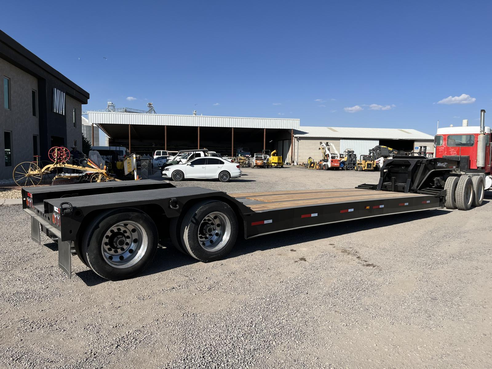

Lowboy (cama baja)
Camión de transporte de carga pesada y sobredimensionada, con plataforma baja para subir y bajar maquinaria con seguridad.
Capacidad referencial: 40 a 60 toneladas
- Traslado de bulldozers
- Movimiento de excavadoras
- Cambio de maquinaria entre obras